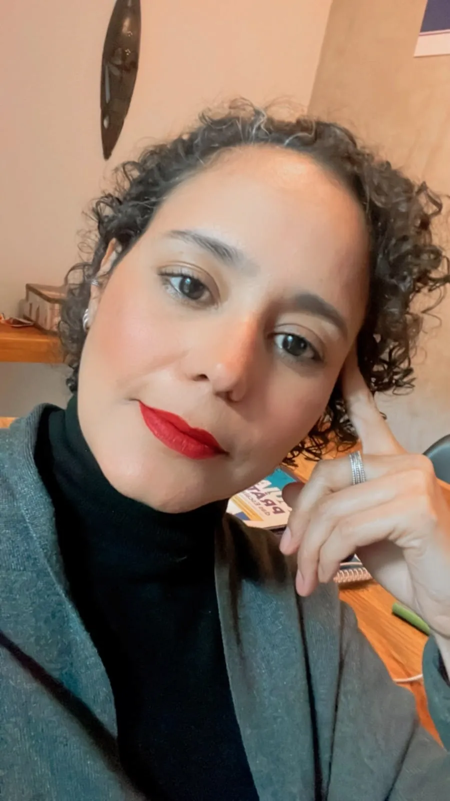

Psicoterapia para adultos e jovens adultos · Águas Claras/DF e online
Um espaço para compreender o que você está vivendo.
Ansiedade, tristeza, mudanças ou a sensação de estar sem rumo merecem ser escutadas com calma. Aqui, a sua experiência vem antes de qualquer rótulo.
Um primeiro encontro para nos conhecermos. Depois, você decide, no seu tempo, se quer seguir.
Psicóloga · CRP 01/11041 · Pós-graduada em Psicologia Fenomenológica Existencial · Mais de 20 anos de prática clínica
A abordagem
Compreender não é explicar. É aproximar-se do que se apresenta.
Na Psicologia Fenomenológica, o ponto de partida não é um rótulo ou uma categoria, mas a forma como você vive o que vive. Antes de concluir, a gente escuta.
Os filósofos chamam esse gesto de epoché: colocar entre parênteses os julgamentos prontos, para que a sua experiência possa aparecer com mais clareza.
Autoconhecimento
Olhar para si com curiosidade e gentileza, descobrindo camadas da própria experiência.
Escuta sem julgamentos
Tudo o que é dito encontra acolhimento, sem rótulos, sem comparações, sem pressa.
Experiência vivida
O foco é a sua vivência única: compreender seus significados, não enquadrá-la.
Desenvolvimento pessoal
Crescer a partir das próprias vivências, transformando dificuldades em caminho.
Construção de sentido
Encontrar, nas experiências e relações, os fios que tecem o sentido da existência.
A quem serve
Para quem busca compreender-se melhor
A abordagem fenomenológica é para quem quer viver com mais autenticidade e clareza sobre o próprio caminho.
Pessoas em transição
Mudanças importantes na vida e a busca por clareza para seguir em frente.
Quem busca autoconhecimento
Interesse em explorar motivações, valores e quem você é além das expectativas.
Sofrimento emocional
Ansiedade, tristeza ou vazio que merecem ser escutados e compreendidos.
Em busca de sentido
Questionamentos sobre propósito e o desejo de viver de forma mais consciente.
Desafios no trabalho
Dificuldades profissionais ou o desejo de alinhar o trabalho aos próprios valores.
Jovens adultos
Um espaço para atravessar as escolhas e os desafios desta fase da vida.
Como funciona o atendimento
Um caminho simples para começar
Um atendimento conduzido por uma psicóloga com formação especializada em Psicologia Fenomenológica Existencial e mais de 20 anos de prática clínica.
Primeiro contato
Entre em contato e marque uma conversa inicial para nos conhecermos.
Escuta qualificada
Você é acolhido em um espaço seguro e respeitoso, onde sua história é ouvida.
Exploração
Juntos, exploramos suas experiências vividas e o que elas revelam sobre você.
Compreensão
Uma compreensão renovada de si mesmo, que abre espaço para novas possibilidades.
Presencial
Atendimento em Águas Claras/DF.
Online
Atendimento por videochamada, de onde você estiver.

Sobre
Conheça Creusa Maria Correia Leitão
Sou psicóloga clínica com mais de 20 anos de experiência e pós-graduada em Psicologia Fenomenológica Existencial. Acredito que o cuidado psicológico é, antes de tudo, um ato de presença: estar com o outro de forma autêntica, sem pressa, sem julgamentos, criando as condições para que cada pessoa encontre suas próprias respostas.
Minha formação me permite um olhar profundo sobre a experiência de cada pessoa, acolhendo não apenas o sintoma, mas o sentido que cada um dá à própria vida.
Formação e credenciais
Uma trajetória construída com estudo, escuta e presença
Pós-graduação em Psicologia Fenomenológica Existencial
Universidade Católica de Brasília · 2015
Graduação em Psicologia
UniCEUB · 2004
Registro profissional
CRP 01/11041
Experiência clínica
Mais de 20 anos de atendimento individual e processos terapêuticos.
Dúvidas frequentes
Perguntas comuns
Qual é a diferença entre fenomenologia e psicanálise?
A fenomenologia foca em como você experimenta o mundo aqui e agora, respeitando sua perspectiva única. A psicanálise enfatiza o inconsciente e eventos do passado. Ambas são valiosas, com abordagens diferentes.
Quantas sessões preciso fazer?
Depende de você e dos seus objetivos. Algumas pessoas buscam poucas sessões para uma questão específica; outras preferem acompanhamento contínuo. Conversaremos sobre isso no primeiro encontro.
Realizam atendimento online?
Sim. Há atendimento presencial em Águas Claras/DF e atendimento online. Você escolhe a modalidade que melhor se adequa ao seu contexto.
O que é dito na terapia fica em sigilo?
Sim. O sigilo profissional é um direito seu, garantido pelo código de ética da profissão.
Como agendar uma sessão?
Você pode entrar em contato pelo WhatsApp. Combinamos juntos o melhor dia e horário para você.